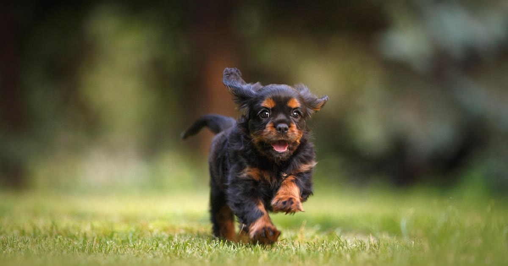

A cerca virtual (ou geofence) é um recurso das coleiras GPS que permite desenhar, no aplicativo, um perímetro seguro no mapa — os limites do quintal ou da casa, por exemplo. O dispositivo monitora constantemente a posição do cão em relação a essa área, e o app envia um alerta imediato ao celular do tutor assim que o cão cruza essa fronteira (mecânica descrita por The Pet GPS, retrieved 2026-08-22).
O processo varia um pouco conforme o fabricante, mas segue uma lógica parecida na maioria dos apps:
Consulte sempre o manual específico do seu modelo para o passo a passo exato — os resultados de mercado indicam que essa etapa varia conforme o fabricante (mesma fonte The Pet GPS citada acima, retrieved 2026-08-22).
Um erro comum é confiar na cerca virtual sem testar antes — a mecânica de alerta pode falhar por questões de sinal (Wi-Fi ou rede móvel indisponível no momento), atraso na atualização de posição, ou simplesmente notificação do app estar desativada nas configurações do celular.
um erro comum é configurar mal a cerca virtual — veja outros erros
O mesmo recurso está disponível em modelos voltados para gatos, com a diferença de que o comportamento territorial felino (raio de exploração maior à noite) pode gerar mais alertas de saída — não é defeito, é o comportamento normal da espécie sendo capturado pelo sistema.
como a coleira GPS localiza o pet em gatos
É especialmente útil para cães com histórico de fuga recorrente, já que o alerta imediato permite agir antes de o cão se afastar muito. Para cães que raramente saem do quintal, o recurso funciona mais como reforço de tranquilidade do que como necessidade prática.
útil para cães que tentam fugir com frequência
A cerca virtual é um dos recursos mais úteis de uma coleira GPS, mas depende de configuração correta e de teste prévio para funcionar quando realmente importa. Trate o alerta como uma ferramenta de reação rápida, não como uma barreira física — ele avisa que o cão saiu, mas não impede fisicamente a fuga. Para contenção física real, especialmente com filhotes, vale avaliar um cercado físico para cachorros como complemento.
volte ao guia completo de coleira GPS para pet
Escrito pela Equipe Smart Pet Gadgets, redação especializada em comparativos de produtos pet no mercado brasileiro. Veja nossa política editorial e como verificamos as fontes citadas neste artigo.
🐾 Confira o preço e a disponibilidade atual no Mercado Livre.
Ver no Mercado Livre →Link de afiliado: podemos receber uma comissão por compras feitas através deste link, sem custo adicional para você.
Nildo Alves — curadoria de produtos pet no Smart Pet Gadgets. Testa e pesquisa produtos para cães e gatos, cruzando especificações de fabricante com boas práticas veterinárias e dados de mercado.
Sobre o Smart Pet Gadgets · Contato · Política editorial e de afiliados